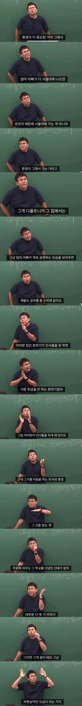

빅데이터에 의해 하는 말이라고 함

빅데이터에 의해 하는 말이라고 함
둘다중요한데 재능이 80~90% 환경이10~20%임
의사부부 지방에서자란애가 고졸부부 대치동에서풀교육으로자란거보다 공부잘할확률이 훨씬높음
의사부부지방은높은확률로 sky 이상가고 고졸부부대치동은 높은확률로 건동홍임
고졸부부 대치동은 로또 5번 당첨된거냐
예시가 공감 되는 게 하나도 없어서 말에 신빙성이 존나게 없어져버림
부모재산받거나 인플루언서 , 토토 ,사업이면 쌉가능이지 뭔ㅋㅋㅋㅋ 대치동이 공부잘해만들어갈수있따고생각하냐
의외로 잘사는 아파트에 못배운애들 많이산다.
의사부부라는거도 놀랍게 환경에 해당하는 점 같은데
의사부부면 지방이어도 거기서는 풀교육할테니 환경 좋은거라고 봐야하지않을까?
서울/지방의 중학생 1학년 성적 비슷한 애들을 추적관찰한 한국은행 보고서 보면 서울대를 서울출신이 지방보다 몇배이상 보냈다고함 해당 보고서 결론은 학벌은 부모 경제력이 차지하는게 매우 크다고 결론 지음
나는 의대가서 탑티어가 되겠다 -> 재능, 나는 가진게 쥐뿔도없지만 인서울하겠다 -> 노력가능
현실적으로 수능과 고등학교 내신이 앞으로 남은 인생 중에 가장 쉬운 1티어 계급 상승 기회인데,
이 정도로 난이도가 낮은 경쟁을 가지고 '노력도 유전적 재능'이라고 합리화하고 놓아버린다면 평생 패배자 마인드로 살 수 밖에 없다고 본다.
수능 따위는 환경과 노력이 중요한거지 유전적 재능을 논하는 레벨이 아님.
유전적 재능은 최고점이 (가능성) 높은거고, 환경은 최저점을 (최악) 정하는거임 둘다 중요함
일단 환경적 요인은 최소한 범죄 우발지역에 살지 말아야함 멀쩡하던새끼가 엇나가는 경우 되게 많이봄
공부잘하는 애들 사이에 던져 놓으면 그안에서 설령 일진이 되어도 전국 일진들보다는 제일 공부 잘하게됨 ㅋ
재능이 있음에도 활용 못하는 경우는 엄청 어릴때 어른이 이끌어주지 못해서인데
주변 환경만 뒷받침되면 알아서 스스로 갈길 찾아감
환경은 진짜 중요함
애들도 비교를 많이하다보니 학군지가 중요하긴해
ㄹㅇ 음악이나 예술을 하는 부모 밑에서 자란 아이들은 자연스럽게 예술쪽으로 빠지더라
공부에 유전자가 중요하긴 한데, 뭔 노벨상을 타오라는 것도 아니고 서울대고 나발이고 대입따위에 유전자를 찾고 있어
맹모삼천지교란 말이 괜히 있는게 아님
sky가는거까진 노력하면 가능하지
전국 1등 2등 하려면 재능이어야 겠지만
생각보다 머리 나쁜 서울대생 왕왕 있음
그런 사람들이 오히려 승리자지
저게 솔직히 구라고 폭력임
대학 교수와 석학들이 천장 정해졌다고하는데
저사람은 하늘이 천장이라고 해야하는입장임
대중에게 강의하는입장이라서 그럼
니는임마 때려쳐 기술배와 라고 하는게 참스승임
나는 어머니가 하루종일 공부하고 아버지가 하루종일 놀아서 반반닮음 애매하게 공부해서 애매하게 대학감 ㅋㅋㅋㅋㅋ
나도 교직경력 데이터에 의하면 재능은 고점을, 주변 환경은 저점을 설정하는거 같다. 주변애들이 공부해야 아이도 공부를 하고 주변애들이 삥뜯으면 아이도 삥을 뜯는게 자연스러운 걸로 학습한다. 어른들이 지식을 주입할순 있지만 사회적인 습관이나 관성은 어른보다 주변 또래들을 따라가는게 더 커보임.